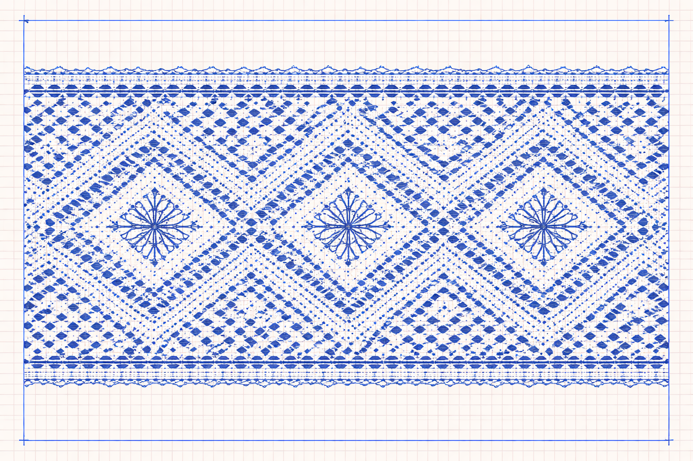

MENU
Úvodní stránka
Kurzy a techniky
|
Naše nabídka
| Kurz |
Pro koho |
Popis |
Cena |
| Základy paličkování | začátečníci | Seznámení s podvinkem, paličkami a základními tahy. | 1 800 Kč |
| Tradiční vzory | mírně pokročilí | Klasické krajkářské motivy a jemnější práce. | 2 100 Kč |
| Šperky z krajky | pokročilí | Výroba náušnic, náramků a ozdobných detailů. | 2 400 Kč |
| Vánoční ozdoby | pro všechny | Sezónní kurz zaměřený na dekorace a dárky. | 1 600 Kč |
| Jemná krajka | pokročilí | Náročnější techniky a práce s detailním vzorem. | 2 700 Kč |
| Dětské paličkování | děti 10+ | Jednoduché motivy, krátké lekce a bezpečné tempo. | 1 400 Kč |
| Techniky |
| Plochá páska | základní technika pro začátečníky |
| Přidávání párů | rozšíření vzoru a práce s hustotou |
| Vějířky | ozdobný motiv do větších vzorů |
| Šitá krajka | detailnější a jemnější práce |
Zápis do kurzu probíhá přes externí formulář. Student vyplní základní údaje, vybere kurz a přiloží obrázek oblíbeného podvinku.
|
TIPY
Nejlepší pro start je základní kurz.
Přineste si své oblíbené paličky.
Na pokročilé kurzy je vhodná vlastní poduška.

|